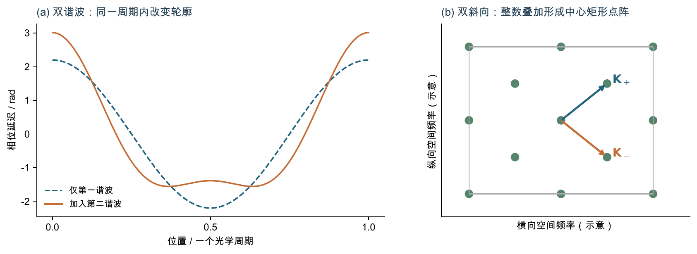
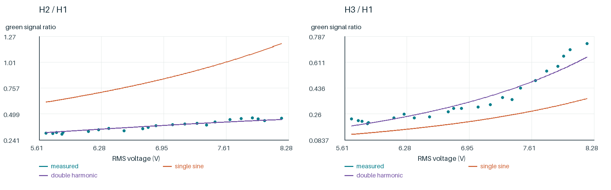
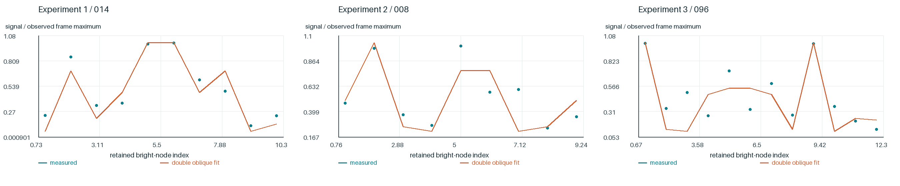

电压怎样改变各级光强的配比？
空间频率决定光斑位置，傅里叶权重决定光强。现在把绿色净积分与相位光栅模型比较：同一组参数是否能解释不同级次的配比？
单正弦相位已经能产生多个衍射级，但它不能同时描述实验1的两条峰比曲线。于是加入第二空间谐波，仍让两条曲线共用一组参数。


| 模型 | 训练log RMSE | 相邻两帧留出log RMSE |
|---|---|---|
| 单正弦 | 0.677911 | 0.67518 |
| 双谐波 | 0.0870959 | 0.0996468 |
双谐波改善了该区间的描述和留出预测。它仍是有效光学模型，电压参数关系并未在所有扫描中成立。
| 实验 | 方向 | 帧数 | 直接转移log RMSE |
|---|---|---|---|
| 实验2 | 升压 | 26 | 0.277054 |
| 实验2 | 降压 | 1 | 0.0809967 |
| 实验3 | 升压 | 39 | 0.357363 |
直接使用实验1的参数，不以待测轮数据重新拟合；实验3的二阶峰比存在失配。22折检验每次同时移走相邻两帧的两条峰比，保留全部训练/留出身份。
留出计算 · 参数、损失与转移结果 · 实测与预测前一节的两条斜向步长给出了点阵位置。假设有两组斜向正弦相位，其复透射场的傅里叶分量给出双Bessel强度谱。位置与亮度因此成为同一光学模型的两个部分。

| 实验 | 帧数 | 亮节点 | 逐帧相对谱误差中位数 |
|---|---|---|---|
| 实验1 | 7 | 71 | 15.8% |
| 实验2 | 4 | 36 | 20.4% |
| 实验3 | 15 | 169 | 22.9% |
本次重拟合26帧、276个既定亮节点。模型概括主要光强配比，左右不均与局部弱信号仍有偏离；拟合通过不能唯一确定液晶取向。
二维拟合保留原多起点、低相位分支、非负整体尺度和有符号损失。亮节点的选择来自原测量子集，不按本次拟合好坏重新挑点。完整历史还检查过弱节点、相位分支、孔径和局部重叠；这些限制不因本次重拟合而消失。
全部逐帧参数 · 全部节点 · 完整数值算法模型把测量推进到解释，也给出了新的问题：这些光学相位分量可能来自怎样的微观结构？
双击Mac或Windows启动器，在研究界面选择本节的案例，再点击分步计算或计算整个案例。
命令行参数：
--cli research --chapter intensity --out work/intensity_01
每次写入新目录。下方数据记录说明了本节实际重算范围。